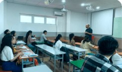

Báo cáo điều hành
Dashboard các cấp quản lý
Sở → xã/phường → trường: số liệu chính, đơn vị cần chú ý, tiến độ nộp báo cáo
Chi tiết
Hoạt động người dùng
Tần suất, tỉ lệ sử dụng, thời lượng, khung giờ sử dụng
Chi tiếtHoạt động dạy và học
Khoá học, tài nguyên, lượt tương tác, chế độ học có AI, tiến độ
Chi tiếtChất lượng dạy và học
Kết quả học tập, mức đáp ứng yêu cầu cần đạt
Chi tiếtKhảo sát người dùng
Đợt khảo sát, tỉ lệ phản hồi, mức hài lòng
Chi tiết
Kỳ thi chung
Điều hành kỳ thi, kết quả, phổ điểm
Chi tiết
Học liệu và thư viện
Số lượng, tình trạng, hiệu quả, chất lượng kho học liệu
Chi tiếtHạ tầng triển khai
Vận hành hạ tầng hệ thống, hạ tầng tại cơ sở giáo dục
Chi tiếtTần suất học tập, giảng dạy
Yêu cầu cần đạt và % hoàn thành của học sinh, giáo viên
Chi tiếtXếp hạng đơn vị
Báo cáo tuỳ chỉnh theo tiêu chí, xếp hạng phục vụ khen thưởng
Chi tiết